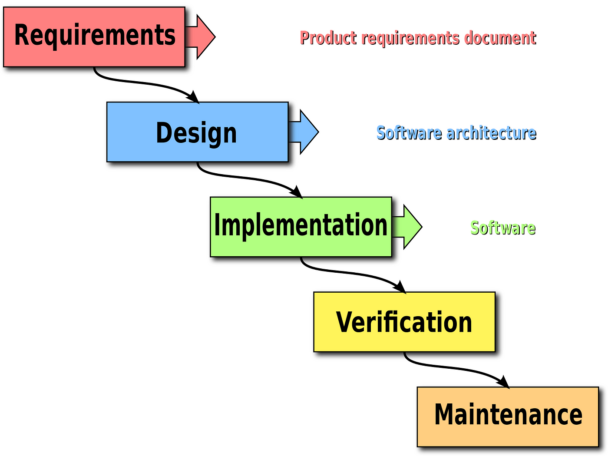

CASE-vahendite lühitutvustus
Mis on CASE-vahendid?

- CASE-vahendid ehk Computer-Aided Software Engineering on tarkvaratehnoloogia
vahendid, mis toetavad tarkvaraarenduse erinevaid etappe alates projekteerimisest kuni
testimiseni.
Kus neid kasutatakse?
- Neid kasutatakse laialdaselt tarkvaraarenduses ja -halduses erinevates tööstusharudes, sealhulgas IT, tootmine, tervishoid jne.
Potentsiaalsed vead ja väljakutsed
- Võimalikud vead võivad hõlmata keerukust ja kõrgeid kulusid, eriti juhul, kui tööriistad ei ole õigesti integreeritud või kasutajad neid valesti rakendavad.
- Mõned ettevõtted võivad leida, et CASE-vahendid on liiga piiravad või mitte piisavalt kohandatavad nende konkreetsetele vajadustele.